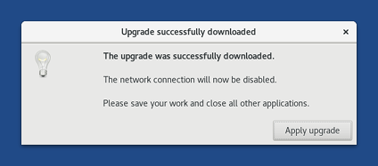

This release fixes many security vulnerabilities.
You should upgrade as soon as possible.
Änderungen
Aktualisierungen und Änderungen
Add a confirm dialog between downloading and applying an automatic upgrade to control better when the network is disabled and prevent partially applied upgrades. (#14754 and #15282)

When running from a virtual machine, warn about the trustworthiness of the operating system even when running from a free virtualization software. (#16195)

Disable Autocrypt in Thunderbird to prevent sending unencrypted emails by mistake. (#15923)
Update Linux to 4.18.20.
Update Tor Browser to 8.0.4.
Update Thunderbird to 60.3.0.
Behobene Probleme
Fix the opening of Thunderbird in non-English languages. (#16113)
Reduce the logging level of Tor when using bridges. (#15743)
Lesen Sie für mehr Details unser Änderungsprotokoll.
Bekannte Probleme
Tails fails to start and displays a black screen with some Intel graphics cards.
To fix this issue, add
nomodesetto the startup options.If this workaround doesn't work, add
nomodeset xorg-driver=vesato the startup options.If this workaround doesn't work, please report to tails-support-private@boum.org:
- The brand and model of your computer.
- The workaround that you tried and that failed.
- If possible, the output of the
lspci -ncommand executed on another Linux system, such as an older Tails.
Lesen Sie sich die Liste der längerfristig bekannten Probleme durch.
Get Tails 3.11
Befolgen Sie zum Installieren unsere Installationsanweisungen.
To upgrade, automatic upgrades are available from 3.9 and 3.10.1 to 3.11.
Falls Sie keine automatische Aktualisierung durchführen können oder das Starten nach einer automatischen Aktualisierung fehlschlägt, versuchen Sie bitte eine manuelle Aktualisierung.
Was kommt als Nächstes?
Tails 3.12 is scheduled for January 29.
Werfen Sie einen Blick auf die Roadmap, um zu sehen, was wir als Nächstes vorhaben.
We need your help and there are many ways to contribute to Tails (donating is only one of them). Come talk to us!